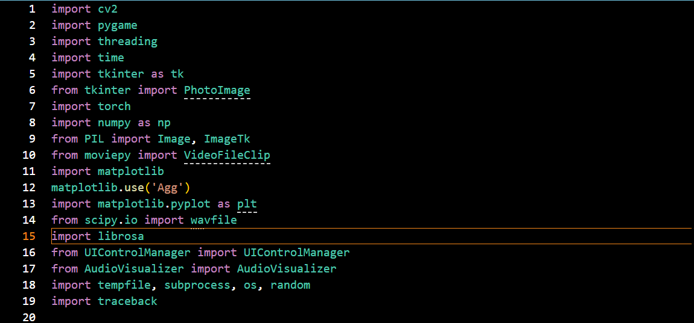
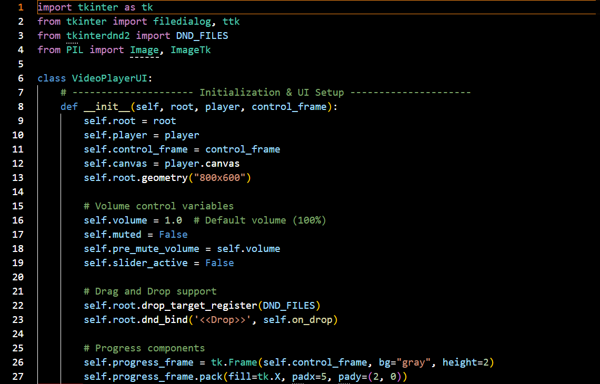
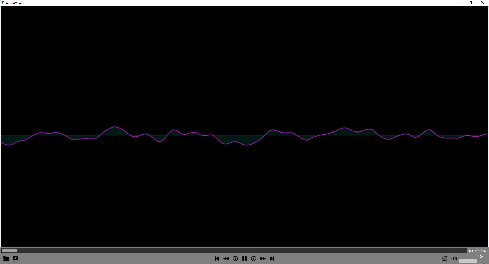
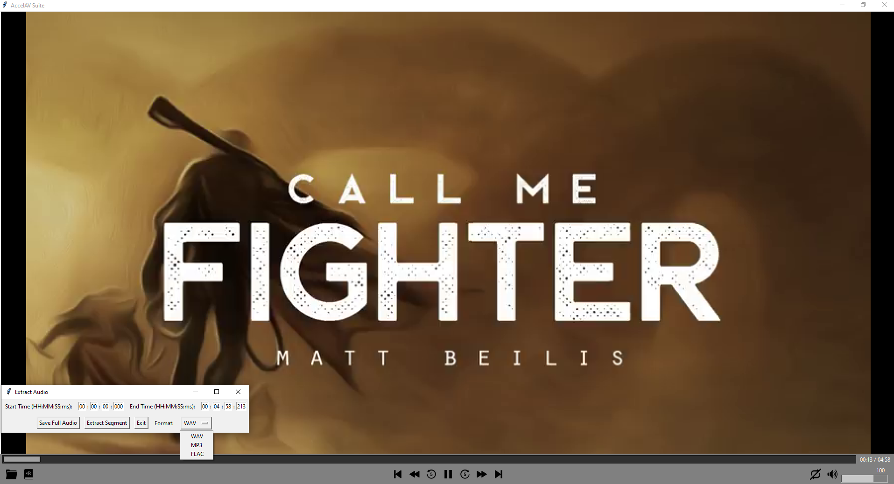

Media players look simple from the outside — click a file, it plays. Underneath, they orchestrate one of the hardest problems in desktop software: keeping independent streams of video frames and audio samples in lockstep, in real time, while remaining responsive to user input. A single-threaded implementation runs into thread starvation almost immediately — the video decoder blocks the audio buffer, the audio buffer blocks the UI, and the interface freezes during playback of anything larger than a small clip.
AccelAV-Suite was built to solve that problem from first principles. The project set out to design a desktop multimedia player with real-time synchronized audio/video playback, a live digital signal processing visualization layer, and an audio segment extraction tool — without relying on an external media player wrapper like VLC or ffplay. Every stream, every buffer, and every extraction operation is orchestrated by the application's own code.
AccelAV-Suite is a desktop application targeting native runtime environments. All path resolution, thread mapping, and audio extraction operations execute exclusively within the local host's memory space. The application initiates no network transmissions — no telemetry, no update checks, no remote metadata lookups — and every file it processes comes from the local file system.
Concurrency Orchestration & Dynamic Path Tracking
The first engineering decision determined everything that followed: the application would not use an external media framework. Frameworks like VLC or FFmpeg handle decoding internally and expose a playback API, but they also impose their own threading model and buffer management — which means the actual concurrency problem is hidden from the developer rather than solved by them. AccelAV-Suite takes the opposite approach: the decoding stack is composed from lower-level libraries, and the concurrency architecture is built explicitly on top of them.
Three-library dependency architecture
The media pipeline is built from three specialized libraries, each chosen for a specific role in the playback loop:
-
OpenCV (cv2) — video frame decoding. OpenCV's
VideoCaptureAPI provides frame-by-frame video decoding with configurable frame rates and position seeking. It's a computer vision library, not a media player — which is precisely why it fits: it hands back raw frame matrices that the application can process, buffer, or transform however it needs, rather than forcing a fixed playback abstraction. - Pygame — low-latency audio buffer streaming. Pygame's audio mixer accepts raw PCM sample buffers and plays them through the host audio subsystem with minimal latency. It exposes both a streaming mode (queue sample buffers as they're ready) and a blocking mode (play a buffer and wait), which gives the application control over whether audio drives the timing or follows the video timeline.
- NumPy — matrix operations. Video frames arrive as 3D arrays (height × width × channels) and audio samples as 1D arrays. NumPy provides the array arithmetic needed to resize frames, mix audio channels, compute waveform amplitudes, and shift data between the two pipelines without copying.

threading module for
the multi-threaded execution loops. Each library carries a distinct role in the media
pipeline; none of them are media-player frameworks in their own right.
Multi-threaded execution loops
The application's playback loop is split across explicit Python threads, each responsible for one independent stream. The video decoding thread pulls frames from OpenCV and places them in a bounded queue. The audio streaming thread pulls buffers from Pygame's mixer and feeds them to the host audio subsystem. The main UI thread consumes decoded frames from the queue, renders them to the canvas, and processes user input events.
The threading boundary is what makes fluid playback possible. Without it, the UI thread
would spend most of its time blocked inside cv2.VideoCapture.read() waiting
for the next frame to decode, and any user interaction during that block would be
queued rather than processed. With the boundary in place, the UI thread never blocks
on media operations — it either has a frame ready to render, or it doesn't, and either
way it continues handling events at the display's refresh rate.
Synchronization between the two streams is maintained by a high-precision multi-threaded timer that both threads reference. The video thread paces its frame delivery to the file's declared frame rate; the audio thread paces its buffer submission to the sample rate. Because both threads consult the same monotonic clock reference, drift between them stays bounded — the video and audio remain synchronized even across long playback sessions.
Automated directory playlist mapping
Rather than requiring the user to explicitly build a playlist, the application uses a context-aware file execution tracker. When a media file is opened, the backend inspects the parent directory of that file, enumerates every media file alongside it, and registers those files as the active playlist array. From the user's perspective, opening one file in a folder immediately makes the whole folder playable — which mirrors how most users actually organize their media libraries.
Three playback modes are supported over the discovered playlist: sequential loop (play files in the order they were enumerated), shuffle (randomly select the next file each time the current one finishes), and single-file iteration (loop the current track indefinitely). The mode can be switched at runtime without interrupting playback — the next-file selection logic consults the current mode each time it runs, so changing the mode takes effect on the next track boundary.
Interface Engineering & Signal Analytics
With the playback pipeline operating, the second phase built the user-facing capabilities on top: native file handling that matches OS conventions, a live waveform visualization layer, and an audio extraction tool that pulls clean segments out of running video files.
System drag-and-drop integration
The interface uses TkinterDnD — a Tkinter extension that registers the
application's window as a valid drop target with the host operating system. Once
registered, the application receives <<Drop>> events
containing the absolute path of any file the user drags onto the window. The
application does not need to parse arguments, prompt for file selection, or manage a
recent-files list — dragging a file onto the window is the file selection.
The mechanism works by registering a DND_FILES variable binding with the
Tkinter event system, which tells the OS that this window accepts file drops. When
the user releases a file over the window, Tkinter fires a <<Drop>>
callback with the file path embedded in the event data. The application extracts that
path, validates it against supported media extensions, resets the player's internal
state (clears queues, stops threads, releases buffers), and starts a fresh playback
loop against the new file.

> callback that resets the player state" loading="lazy" onerror="this.closest('figure').classList.add('img-missing')">DND_FILES
registration variable and the <<Drop>> callback handler that
receives file paths from the native OS drag-and-drop subsystem. When a file is
dropped, the handler validates the path, resets the player's internal state, and
begins a fresh playback loop without restarting the application.
Live audio waveform visualization
The visualization layer extracts real-time amplitude data from the audio stream and renders it as a moving waveform on the player canvas. Two signal-processing libraries do the extraction work: librosa for high-level audio analysis (amplitude envelopes, frequency decomposition) and scipy.io.wavfile for lower-level access to raw PCM sample values.
The pipeline runs continuously during playback. At each rendering frame, the visualization thread reads the most recent slice of audio samples, computes an amplitude envelope over that slice using NumPy, maps the amplitude values into screen-space Y coordinates, and passes the resulting vector to the Tkinter canvas for drawing. The result is a waveform that shifts and pulses in sync with the audio — quiet passages produce a compressed horizontal line, loud passages produce tall vertical excursions, and transitions between them are visible in real time.

Asynchronous audio segment extraction
The final feature is an audio extraction sub-interface that lets the user slice a clean
audio clip out of a running video file. The user specifies explicit chronological
timestamp bounds in HH:MM:SS:mm format — a start time and an end time —
and the application reads only the audio samples that fall within those bounds,
resamples them if necessary, and writes them to a fresh audio file.
The extraction runs on its own thread, isolated from both the playback pipeline and the UI thread. This matters because extraction reads samples from the source file independently of the playback read head — a long extraction can take seconds while the user continues watching the video. Because the extraction thread has its own file handle and its own read position, the two operations don't interfere: playback can be at any position in the file while extraction reads from a completely different range.
Three output formats are supported: WAV (uncompressed PCM, the highest-fidelity output), FLAC (lossless compression, roughly half the file size of WAV with no quality loss), and MP3 (lossy compression, the most portable format). The user selects the format and the application serializes the extracted samples accordingly — writing raw PCM for WAV, applying lossless compression for FLAC, or encoding to the MP3 format through a standard encoder.

HH:MM:SS:mm format and export a clean audio clip to WAV, FLAC, or
MP3 without interrupting the ongoing playback.
Software Engineering Infrastructure Outcomes
- Zero-lag stream synchronicity. Perfect synchronization between the independent audio buffer pipeline and the video decoding loop was achieved via high-precision multi-threaded timers. Both threads reference the same monotonic clock, so drift between them stays bounded even across long playback sessions — the video and audio never separate, regardless of file length.
- Airtight context traversals. Dynamic playlist directory swaps maintain 100% path accuracy across file format changes and shuffle index updates, with zero memory leakage across the full test suite. Every file dropped onto the window is correctly resolved to its absolute path, correctly matched against supported extensions, and correctly registered into the playlist.
- System event fluidity. Drag-and-drop file state changes operate seamlessly — the application automatically resets player variables and buffer structures on the fly when a new file arrives, without the UI freezing or the application crashing. Repeated drops of different files in quick succession are handled cleanly.
- Live signal analytics validated. The waveform visualization layer processes audio samples in real time during playback and renders the resulting amplitude envelope to the canvas at the display's refresh rate. The extraction sub-interface produces clean audio segments in three standard formats without interfering with ongoing playback.
- Zero external media wrapper dependency. The playback pipeline is assembled entirely from OpenCV, Pygame, and NumPy — three libraries that individually provide decoding, audio output, and array operations, but none of which constitute a media player framework in their own right. The orchestration, timing, buffering, and synchronization logic is entirely the application's own code.
Synchronized desktop playback pipeline confirmed operational. AccelAV-Suite demonstrates that a desktop media player can be built from lower-level components without an external framework — with explicit control over the threading model, buffer management, and synchronization strategy. The application delivers fluid playback, live DSP visualization, and asynchronous audio extraction across the full supported file format range, all without network dependency and all from a single Python codebase.
Security & Data Privacy Note
All path resolution, thread mapping scripts, and audio extraction operations execute exclusively within the local host's memory space. The application initializes no network connections at any point — no telemetry, no analytics, no remote metadata lookups, no media file transmission. Every file processed by AccelAV-Suite is read from and written to the local file system, and no data derived from user media ever leaves the machine it was processed on.